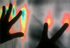
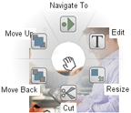
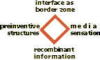

research
Connecting sensation, media, computing, networks, ontology,
methodologies, cultures.
home
define
people
courses
workshops
summer of code
The Interface Ecology Lab investigates human-centered computing support for expression, creativity, and social engagement.
Research involves examining situated practices, designing interfaces, building software components and distributed systems, and designing new methods of evaluation. Cognitive and ethnographic inquiry enable the development of semantics, collections, tools, social networks, installations, and performances that open the role of computation in human experience to promote creativity, discovery, communication, play, contemplation, satisfaction, and survival.
current research

Embodied interfaces
research integrates embedded systems with HCI and the interface ecosystems approach, to imagine and develop new embodied experiences through computing and signal processing.
We create new devices and experiences,
using low power sensors, computers, and networking.
Context is modeled based on
recognized patterns. Affordances are designed;
systems responds with clear feedback and
media, to stimulate particpants' senses.
The flagship project is our ZeroTouch multi-finger sensor.

Information composition is a holistic form
for representing collections and to support ideation.
Image and text clippings from web pages function as visual, semiotic, and
navigational surrogates (bookmarks) for significant ideas.
The flagship project is our ZeroTouch multi-finger sensor.
 Information-based ideation
builds on creative cognition and sensemaking, and connects to exploratory search.
This research develops
evaluation methods for creativity support environments in contexts of information seeking and collecting.
Information-based ideation
builds on creative cognition and sensemaking, and connects to exploratory search.
This research develops
evaluation methods for creativity support environments in contexts of information seeking and collecting.
 S.IM.PL is our open source initiative for augmenting popular programming languages to facilitate inter-operation, with an emphasis on simplifying development of distributed applications that represent the world.
The foundation layer, S.IM.PL Serialization, is based in a language-indepdenent type system, encapsulated by TranslationScopes.
which enables cross-language code generation, as well as de/serialization to XML, JSON, and TLV.
Object-Oriented Distributed Semantic Services (OODSS) simplifies building distributed applications and services,
which decode message passing using S.IM.PL Translation Scopes, to connect iPhone, Android, Java, and .Net clients to Java and .Net servers.
BigSemantics and the meta-metadata language comprise a type-system for specifying wrappers that represent, extract, present, and operate on metadata derived from diverse information sources.
S.IM.PL is our open source initiative for augmenting popular programming languages to facilitate inter-operation, with an emphasis on simplifying development of distributed applications that represent the world.
The foundation layer, S.IM.PL Serialization, is based in a language-indepdenent type system, encapsulated by TranslationScopes.
which enables cross-language code generation, as well as de/serialization to XML, JSON, and TLV.
Object-Oriented Distributed Semantic Services (OODSS) simplifies building distributed applications and services,
which decode message passing using S.IM.PL Translation Scopes, to connect iPhone, Android, Java, and .Net clients to Java and .Net servers.
BigSemantics and the meta-metadata language comprise a type-system for specifying wrappers that represent, extract, present, and operate on metadata derived from diverse information sources.

Interface Ecology is a metaframework, an epistemological underpinning that connects theory and practice, constructing the interface as a border zone between heterogeneous systems of representation: organic and machinic; physical and electronic; analog and digital; cultural and economic; text, image, and sound; and engineering, science, humanities, and the arts. Forms and processes are transformed by investigation of new connections between representational systems. Identification of differences stimulates the production of new knowledge. An example is interdisciplinary collaboration, in which the process of resolving mismatches between methodologies can serve as a catalyst for developing innovative inter-methodologies.
prior projects
 We are developing new digital games for Teaching Team Coordination. This research takes ethnography of fire emergency response work practice as a
basis, and develops simulations of aspects of team coordination. Real-world actions map to game activity, as players work together to find
real goals and avoid virtual hazards.
We invented Zero-Fidelity Simulation, a method that focuses on reproducing the communication and information distribution components of target environments to produce engaging, low-cost, and effective educatioal experiences.
We are developing new digital games for Teaching Team Coordination. This research takes ethnography of fire emergency response work practice as a
basis, and develops simulations of aspects of team coordination. Real-world actions map to game activity, as players work together to find
real goals and avoid virtual hazards.
We invented Zero-Fidelity Simulation, a method that focuses on reproducing the communication and information distribution components of target environments to produce engaging, low-cost, and effective educatioal experiences.
 Hurricane Recovery: Collecting Locative Media to Rebuild Local Knowledge Engages in an iterative participatory process of reaching out to evacuee communities subsequent to Hurricane Katrina, gathering information about needs and desires, building situated semantics and a locative media collection sensemaking system, and using the system to collect, organize, and re-present images, interviews, and metadata. Digital photographs are connected with GPS sensor data, semantics, a zoomable map interface, and an image clustering algorithm.
Hurricane Recovery: Collecting Locative Media to Rebuild Local Knowledge Engages in an iterative participatory process of reaching out to evacuee communities subsequent to Hurricane Katrina, gathering information about needs and desires, building situated semantics and a locative media collection sensemaking system, and using the system to collect, organize, and re-present images, interviews, and metadata. Digital photographs are connected with GPS sensor data, semantics, a zoomable map interface, and an image clustering algorithm.
 Test Collection
consists of a set of documents, a clearly formed problem that an algorithm is supposed to provide solutions to, and the answers that the algorithm should produce when executed on the documents.
The present research develops an open source Test Collection Digital Library System. The system enables collecting and labeling documents, and publishing the resulting test collections.
Test Collection
consists of a set of documents, a clearly formed problem that an algorithm is supposed to provide solutions to, and the answers that the algorithm should produce when executed on the documents.
The present research develops an open source Test Collection Digital Library System. The system enables collecting and labeling documents, and publishing the resulting test collections.